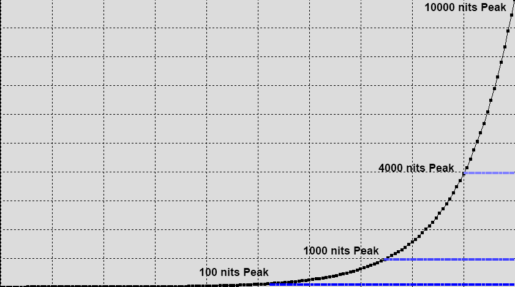

UHDTV - HDR and WCG
Understanding UHDTV Displays with PQ/HLG HDR, and WCG.
UHDTV, combining High Resolutions (nominally 4K) with HDR (High Dynamic Range) via PQ (Perceptual Quantizer) or HLG (Hybrid Log-Gamma) EOFT (Gamma) and WCG (Wide Colour Gamut) imagery is gaining momentum as the next enhancement to our viewing experience. However, the whole UHDTV concept using HDR & WCG is as yet very poorly defined, and even the basics can be very difficult to get to grips with.
UHDTV
UHDTV (Ultra High Definition TV) has had something of a difficult birth, with different display manufacturers effectively defining their own 'Ultra HD' specifications.
In response, the UHD Alliance has released what is calls a definitive (for now) Ultra HD specification called 'Ultra HD Premium', while Eurofins have launched their '4K HDR Ultra HD Logo' scheme.
However, the individual aspects of the UHDTV specification can, and often are, used in isolation. For example, there is nothing to stop a standard gamut display (Rec709), with standard HD or even SD resolution, working with an HDR EOTF with high brightness range.
The problem with HDR is a general lack of understanding as to what the technical aspects of HDR and WCG really are, and what they actually mean to the end viewed image. This tech page will highlight a number of such issues, and attempt to explain their associated potential benefits and problems.
HDR - PQ & HLG
Within this page we are focusing specifically on PQ & HLG HDR and what they mean for display calibration, image workflows and the end image viewing experience. While the Philips/Technicolor and EclairColor HDR formats are included as standard HDR format options within LightSpace CMS, they are as yet not widely in use, so have been omitted within this tech. page to aid simplicity of understanding.
Some of the issues addressed are:
- HDR - not just brighter
- Absolute vs. Relative - viewing environments
- Meta-data - why needed?
- PQ based HDR - Dolby Vision, HDR10, & HDR10+
- HLG HDR - BBC
- HDR - The Reality & Associated Issues
- WCG - Wide Colour Gamut
- UHD - Resolution
Note: PQ HDR defines HDR10, HDR10+, and Dolby Vision, as all use the same target colour space - Rec2020 Gamut, with PQ EOTF. Consequently, calibration for all is identical.
HDR & Brightness
The biggest confusion with regard to HDR is that it is not attempting to make the whole image brighter, which unfortunately seems to be the way most people think of HDR, but aims to provide additional brightness headroom for spectral highlight detail - such as chrome reflections, sun illuminated clouds, fire, explosions, lamp bulb filaments, etc.
Obviously, during the grading process the colourist/DoP, and any other hanger-on that has input into the look of the final image, is at liberty to use the extended brightness range as they see fit. But, moving away from the expected application of maintaining the average picture level consistent with SDR will generate unexpected results, and what will be assessed by the final viewer as being of poor image quality.
It has to be remembered that most HDR displays cannot maintain a linear output brightness response to input signal brightness changes, if the average area of the picture that is 'bright' is high. Only a small percentage of screen area can be 'HDR bright'. The Eizo CG3145 Prominence is one of the few HDR displays that can maintain a linear output brightness response to input signal brightness, due to the use of what is effectively a 'backlight per pixel'.
HDR - What it really means for picture levels
The following is taken directly from the ST2084 (PQ EOTF) specification.
This EOTF (ST2084) is intended to enable the creation of video images with an increased luminance range; not for creation of video images with overall higher luminance levels. For consistency of presentation across devices with different output brightness, average picture levels in content would likely remain similar to current luminance levels; i.e. mid-range scene exposures would produce currently expected luminance levels appropriate to video or cinema.
The PQ based ST2084 HDR specification defines reference white (normal diffuse white) as being 100 nits, which is exactly the same as for SDR (Standard Dynamic Range) displays, as specified for mastering (grading) grade-1 applications. With PQ HDR, above 100 nits is for spectral highlight detail only. This shows that the Average Picture Level (APL) of a PQ HDR display will not be significantly different to a SDR display.
Regardless of the maximum peak brightness the display can generate, diffuse white will always be around 100 nits.
The BBC's HLG HDR standard uses 75% of the signal (input) range as nominal diffuse white, which is obviously a 'variable, as the HLG standard is a 'relative' standard, not 'absolute' as with PQ. This is consistent with any existing SDR TV, and running it at higher peak luma levels for daytime viewing, as is the case in most home lounges.
The nominal nits value for diffuse white will vary with the peak brightness of the display, with a 1000 nit display having diffuse white around 175 nits, and a 4000 nits display around 600 nits, depending system gamma (see later for info on HLG system gamma).
So the reality is that HDR should just ADD to the existing brightness range of SDR displays, meaning that more detail can be seen in the brighter areas of the image, where existing SDR images simply clip, or at least roll-off, the image detail.
The following histogram is a simplified view of the difference between a SDR (Standard Dynamic Range) image, and its PQ HDR equivalent.
Note that the APL (Average Picture Level) remains approximately consistent between the SDR and ST2084 HDR images, with just the contrast range and specular highlight levels increasing.
While this is a PQ based graph, the same is true of HLG based HDR.
If this approach to HDR is understood, and images created based on using the additional brightness range for specular highlights, the true potential of HDR will be realised.
Absolute vs. Relative
One of the things we have simply come to accept when watching TV at home is that we set the peak brightness of the TV to accommodate the existing viewing environment within the room that houses the TV - most commonly the lounge. This is obviously ignoring the videophiles that have environment controlled man-caves with true home cinema setups, but they re not the norm for home TV viewing.
Whilst we know and understand that the SDR grading display will have been calibrated to 100 nits, we also understand that it will have been housed in a controlled grading environment, with little ambient light. The beauty of SDR's relative approach to gamma is that the TV can simply be made brighter to overcome uncontrollable light contaminated environments, including the use of different gamma values.
One of the often overlooked potential issues with PQ based HDR for home viewing is that because the standard is 'absolute' there is no way to increase the display's light output to overcome surrounding room light levels - the peak brightness cannot be increased, and neither can the fixed gamma (EOTF) curve.
As mentioned above, with HDR the Average Picture Level (APL) will match that of regular SDR (standard dynamic range) imagery. The result is that in less than ideal viewing environments, where the surrounding room brightness level is relatively high, the bulk of the HDR image will appear very dark, with shadow detail potentially becoming very difficult to see.
To be able to view PQ based 'absolute' HDR imagery environmental light levels will have to be very carefully controlled. Far more so than for SDR viewing. This really does mean using a true home cinema environment.
To back this statement up, the average surround illumination level that is specified as being required for PQ based HDR viewing is 5 nits, while for SDR it is specified as 10% of the maximum brightness of the display.
PQ - An Absolute Standard
Referring to PQ as an 'absolute' standard means that for each input data level there is an absolute output luminance value, which has to be adhered to. There is no allowance for variation, such as changing the gamma curve (EOTF), or increasing the display's light output, as that is already maxed out.
(This statement ignores dynamic meta-data, more on which later.
The following table shows an example PQ EOTF for a 1000 nit TV.
| Input Data - 10 bit | Output Luminance - nits |
|---|---|
| 0 | 0 |
| 100 | 0.306 |
| 200 | 2.258 |
| 300 | 9.211 |
| 400 | 29.386 |
| 500 | 82.382 |
| 600 | 214.612 |
| 700 | 536.845 |
| 769 | 998.932 |
However, with HLG based 'relative' HDR this is less of an issue, as the HDR standard can be scaled in exactly the same way as traditional SDR TVs, and further, includes a system gamma variable based on surround illuminance, specifically aimed at overcoming environmental lighting issues.
See later for more specific info on the PQ and HLG standard's EOTF curves.
Meta-data
PQ based HDR uses meta-data embedded within the signal to provide the receiving display with information on parameters of the grading display, and the picture content, which the receiving display uses to 'guess' its best configuration to display the picture content.
Note: The term 'guess' is used not to be negative, but because the application of the meta-data depends on the underlying display to be accurately calibrated, and unfortunately there is no really viable way to calibrate HDR TVs as yet - see: UHD/HDR/WCG Calibration.
PQ based HDR meta-data has two forms - Static and Dynamic.
Both Static and Dynamic meta-data includes the chromaticity coordinates for the mastering display's RGB primaries, white point chromaticity, and min/max luminance. It also includes the Max Frame-Average Light Level (MaxFALL) which is the highest frame average brightness within the given program/sequence, and Max Content Light Level (MaxCLL) which defines the luma of the brightest pixel.
Static meta-data, as you would assume, uses the same values for the entire duration of a given program, while Dynamic meta-data changes as often as needed - potentially on a frame-by-frame basis.
HDR10 uses Static meta-data, while Dolby Vision and HDR10+ use Dynamic.
But, why do we need meta-data?
Meta-data is really needed only for one reason - when HDR was introduced there were no TVs that could match the peak luma and gamut coverage of the mastering/grading displays - specifically peak luma. With the 'absolute' nature of PQ based HDR, not having the same peak luma as the mastering display is something of an issue, as the image will clip. To attempt to overcome this, meta-data was introduced to allow the HDR TV to re-map the image content to attempt to overcome its lesser capabilities - apply a Tone Map roll-off to the EOTF/gamma curve.
How this Dynamic meta-data is generated also helps define the way it works for playback, assisting with understanding of the overall approach.
But, the reality is that the use of meta-data simply distorts the viewed image from the director's & colourist's intent, potentially losing the intended emotional response generated by the colour grade.
See HDR - The Reality & Associated Issues below.
Meta-data Generation & Application
The basic approach to the generation of meta-data during grading/mastering is to first grade the HDR content on a professional HDR display, without any form of roll-off/tone mapping, using the highest brightness and colour gamut available (nominally P3 gamut, and between 1000 and 4000 nits). The HDR graded footage is then passed through an analysing system that will re-map the HDR images to SDR, attempting to maintain the original HDR intent, adding Dynamic Meta-data to define the changes between the HDR original and the SDR version. Often, the grading colourist will assist with a 'trim' pass grade to help in maintaining the original artistic intent.
In this way the Meta-data describes the 'grading' changes from the HDR master to the SDR version.
With this meta-data available, when the HDR footage is played back on an HDR display with a lesser peak brightness and/or colour gamut than the original mastering display the dynamic meta-data is used by the display to re-map the footage to a point between the SDR grade and the full HDR grade, based on the capabilities of the playback TV.
The issue is few home TVs accurately apply the correct mapping, grossly distorting the original artistic intent of the footage.
However, many home TVs are now getting close to matching the grading display's peak luma and gamut capabilities, especially as most HDR masters are graded on displays with between 1000 and 2000 nits, making the requirement for meta-data an interesting question going forward. If the viewing TV can match the grading display why is there a need for meta-data? The answer is, there isn't...
And non-PQ based HDR, such as HLG, has no need for meta-data. One of the major differences in using a relative based HDR standard, rather than absolute.
HDR Display Calibration Comparisons
Understanding the above regarding the need, or not, for meta-data brings up an interesting thought on how different HDR displays could be compared.
Assuming that modern HDR displays can all reach a given minimum peak luma level, say 1000 nits, an HDR source mastered at 1000 nits, using a gamut that is within the UHD specification of 90% P3, should not trigger any 'meta-data' based processing (tone mapping/roll-off)within the playback display, allowing for a direct comparison of the different display's underlying calibration accuracy.
From this first comparison, it would then be a relatively simple additional step to compare the same displays with different source material mastered at 2000+ nits, with full P3 gamut, enabling the display's tone mapping/roll-off to be compared separately.
Based on this concept, we have added a 'Colour Sub-Space capability to LightSpace, for example enabling P3 to be profiled with a Rec2020 container.
Note: Another potential reason for the use of meta-data is to enable the receiving TV to understand what component of the image stream it should use, on dual-stream HDR discs. HDR that has this form of meta-data uses a dual-layer image stream, with an SDR base-layer and an enhancement layer for HDR and WCG. SDR TVs, with no understanding of HDR, just use the base-layer, while HDR compatible TVs can combine the base-layer with the enhancement layer. But this meta-data has no impact on the display's image colourimetry & calibration.
PQ HDR - Dolby Vision, HRD10 and HDR10+
ST2084 defines the EOTF (Gamma) for the the PQ based Dolby Vision, HDR10, and HDR10+ HDR formats.
PQ HDR is based on a theoretical 'Reference' display with 10,000 nits max luminance capability, with all 'real world' displays referenced to this theoretical display, and has a gamma curve (EOTF - Electro Optical Transfer Function) as below.
It is worth noting that the PQ based HDR specification 'aims to define an EOTF that is intended to enable the creation of video images with an increased luminance range, not for the creation of video images with overall higher luminance levels'. This means that reference white (normal diffuse white) remains at 100 nits, which is exactly the same as for SDR displays (Standard Dynamic Range) calibrated to 100 nits peak. With PQ HDR, above 100 nits shows spectral highlights only. This shows that the Average Picture Level (APL) of a PQ based HDR display will not be significantly different to a standard SDR display (see the Histogram diagram above)
If you compare this to a standard Rec709 gamma curve the difference is obvious.
Note: as PQ based HDR is an 'Absolute' standard, based on a peak luma of 10,000 nits, and Rec709 is a relative standard with no set peak luma value it is actually very difficult to compare the gamma (EOTF) curves directly. The closest is to compare to a selection of Rec709 peak luma values to a 1000 nit ST2084 display, as follows.

Interestingly, what this shows is how 'dark' PQ based HDR is in the shadows when compared to Rec709 based display calibration, especially when the peak luma of the Rec709 display is lifted. This is one of the main issues with PQ based HDR - the overall picture brightness is a lot lower than most home users are used to, making viewing in normal bright 'living room' conditions very difficult. This is discussed further in the Viewing Environment Considerations section below.
For PQ HDR, different displays will have different peak brightness levels and therefore require modified gamma curves, such as for Dolby's 4000 nit Pulsar monitor, which requires a HDR gamma curve that peaks at around 90% of the PQ standard.
Note: it is ONLY the clipping point that is different. The curve is absolute, so remains consistent - see the 4th image in this section.
Sony's BVM-X300 monitor requires a gamma curve that peaks at 75% of the PQ standard, as the BVM-X300 monitor has a peak value of 1,000 nits vs. the maximum of 10,000 nits for the PQ 'Reference' display.

And the following PQ HDR EOTF curve shows by comparison what a 100 Nit monitor would display.
Note: The above graphs are all standardised to a 0 to 1 range. For a more understandable comparison we really need to map all the curves to their true absolute values, as follows.
(Remember these graphs are linear, not logarithmic, so the visual effect as seen by the human eye is exaggerated!)

If we change the graph to show Log scaling, so the output is perceptually correct for the human eye, we get the following.

The same can be seen in the 'HDR White Levels' graph further down this page.
Note: It is worth noting that no matter what is said elsewhere, no HDR standard can produce 'darker blacks', as they are set by the min black level the display technology can attain, and the present day SDR (Standard Dynamic Range) Rec709 standard already uses the minimum black attainable on any given display. And equally, HDR cannot generate improved shadow detail, ignoring the difference in today's 8 bit SDR Blu-ray standard, vs. 10 bit for HDR. 10 Bit SDR would have far better actual shadow detail.
HDR - The Reality of Black
The following statement is taken from Dolby's own 'Dolby Vision for the Home' white paper.
"The current TV and Blu-ray standards limit maximum brightness to 100 nits and minimum brightness to 0.117 nits..."
Unfortunately, at best this is an inaccurate statement, at worse it is marketing hyperbole, as the Blu-ray format has no such limits for min or max brightness levels, as these values are defined by the display's set-up - remember SDR is a relative standard, not absolute. The minimum level (the black level) is usually just the minimum the display can attain, and can range from very dark (0.0001 nits for example) on OLED displays to higher levels (around 0.03 nits or even higher) on cheaper LCD displays. The maximum brightness is often set far higher on home TVs to overcome surrounding room light levels, with many home TVs set to 300 nits, or more.
Note: The statement that 'The minimum level (the black level) is usually just the minimum the display can attain' refers to the fact that often OLED black can be too low, and users often chose to lift it to prevent shadow detail clipping/crushing, and that becomes even more apparent with home HDR OLEDs.
When the original SDR Blu-ray material is graded, the displays used will be calibrated to 80-120 nits (100 nits being the common average value), within a controlled grading environment (a dark environment), with the black level being from around 0.001-0.03 nits, depending on the display used (although the higher value is often used to maintain 'pleasant' images when viewed on the wider range of home TVs, with variable black levels!). And as mentioned above, when the Blu-ray is viewed in a home environment it is often necessary to set the TV to brighter levels to overcome surrounding room light levels.
HDR - Shadows Too
As we have seen, the reality is PQ based HDR does nothing for black levels, and that is true of shadow detail too - no matter what those less knowledgeable or marketing material may say.
A good example of inaccurate information used to promote 'benefits' of HDR can be seen in this presentation on YouTube, where improved shadow detail was stated as being an example of the benefits HDR brings over SDR... which is incorrect. The reality is the SDR image is probably just poorly graded, even potentially deliberately so, to promote HDR. HDR provides no such benefit over SDR shadow detail.
And in reality, due to the EOTF curve in use on PQ based HDR the black under normal home viewing conditions will often be 'crushed' when compared to SDR versions of the same image. This is born out by the surround illumination level that is specified as being preferred for HDR as being 5 nits, while for SDR it is specified as 10% of the maximum brightness of the display. That is a huge discrepancy, and shows that HDR black/shadows will often be washed-out/clipped when viewed in any environment where the ambient light levels cannot be controlled.
In reality a 10 bit SDR image will have potentially better black/shadow detail than a PQ based HDR image.
Different viewing environments really need different display gamma, which the 'Absolute' PQ based HDR standard cannot address.
Black Clipping/Crushing
There is a further potential issue with black levels, as no display can hit zero black, and so would natively clip the input signal at the bit level relative to its min black due to the 'absolute' nature of the PQ EPTF. This means any PQ display requires some form of 'shadow' roll-off to prevent clipping, but this in-turn will exasperate shadow crushing on displays with higher black levels.
This issue has been widely ignored, and yes can be the cause of very poor shadow clipping/crushing of HDR displays with poor PQ EOTF implementation.
The following images simulate the comparison of an SDR image with its PQ HDR equivalent.
(Obviously, as your display can not adjust its peak brightness this simulation is rather compromised! But, it does show the main body of the image remains consistent in brightness, with the extended dynamic range allowing additional detail to be seen in the highlights.)
{kind=link}
{kind=link}
Unfortunately, most HDR demonstrations do not map the contrast range correctly, with the result that the overall image is simply much, much brighter, which is not the main intent of HDR, as shown above.
Obviously, in the real world the extra dynamic range available with HDR would be used to re-grade the image creatively to benefit from the additional dynamic range - but extended highlight detail is the true reality and potential benefit of HDR.
Different Displays & PQ based HDR
Different HDR displays obviously have different peak luminance capabilities, and so the displayed image will need to clip to the peak nits value available, as defined by the above PQ EOTF graphs. This 'peak luma clip' is controlled by meta-data within the signal, defining the peak luma of the display used to perform grading, which is used by the presentation display to set the correct 'clip' level.
How this clip is performed - a hard clip, as per the above EOTF curves - or a soft clip, with roll-off, has not been defined outside of Dolby Vision, which is a fully defined HDR standard, with all aspects from generation through to delivery managed to pre-set specifications, but incurs a license fee for any display manufacturer adopting it.
The reality therefore, is that it is unlikely two displays will present the same image in the same way, even if they have the exact same peak nits capability, as the process used for peak luma tone-mapping will not be identical.
Peak Luminance & Bit Levels
As the PQ standard is an absolute standard, not relative, each and every luminance level has an equivalent bit level. For a 10 bit signal the levels are as follows.
- 10,000 nits = 1023
- 5,000 nits = 948
- 4,000 nits = 924
- 2,000 nits = 847
- 1,000 nits = 769
- 400 nits = 668
- 100 nits = 519
- 0 nits = 0
{kind=link}
This means any given PQ based HDR display will only use a sub-set of the full signal range, with a 1,000 nits display max'ing out at 769 bits level, with the remaining 254 levels clipped.
Note: This use of a sub-set range for the displayed image is a big part of why Dolby specify 12 bit, not 10 bit, for PQ based HDR.
Further, and as mentioned above, there is an issue with black, as no display can hit zero black, and so would natively clip the input signal at the bit level relative to its min black due to the absolute nature of the PQ EPTF. This means any PQ display requires some form of 'shadow' roll-off to prevent clipping, but this in-turn will exasperate shadow crushing on displays with higher black levels.
The alternative HLG standard is a relative standard, so always uses the full bit levels, regardless of the peak luma of any given display, and displays the image mapped between the displays min black and max white, so suffers no black clipping/crushing.
HLG HDR
Unlike PQ based HDR, the BBC HLG HDR standard is not an absolute standard; instead it is relative, with the EOTF gamma curve always being full range, regardless of any given display's actual peak Luma value. Additionally, the HLG standard also includes an EOTF modifier that alters the EOTF based on the display's surround illumination.
Note: The BBC HLG standard doesn't use a specified reference white point in nits, but instead places it at 75% of the input signal.
The BBC HLG standard is designed for displays up to 5,000 nits, so lower than the ST2084 standard's 10,000 nits, but with the reality of what peak brightness levels HDR displays will actually be capable of is likely more than enough.
All the above BBC HLG curves are based on a low 'Surround' illumination of 10 nits.
It is this 'Surround' value that is especially important for home TV use, as in addition to using the display's peak Luma value to calculate the EOTF, the BBC's HLG standard also uses the display's surround illumination to alter the system gamma, as shown below for a 1000 Nit display.
Different Displays & HLG
As the HLG format has no reliance on meta-data there is a far better level of likely image consistency across different displays.
Additionally, the use of the display's surround illumination to alter the system gamma attempts to adjust display calibration to counter for differing viewing environments. A first real attempt to offer 'viewing consistency' across differing viewing environments.
This is an area where PQ based HDR struggles, as it requires a well controlled viewing environment...
HLG & RGB Separation
The BBC's HLG standard has built into it a compensation for variable system gamma.
The standard first calculates the luminance of the source (before system gamma) using a weighted sum of the RGB components, as normal. The destination luminance is calculated by applying a pure mathematical gamma function to the source luminance, with the RGB channels scaled by the ratio of the source to destination luminance.
This introduces colour cross coupling, as will be seen via the RGB Separation graph, and is both expected, and nothing to worry about when calibrating HLG displays.
HDR - The Reality & Associated Issues
There are a number of issues with HD, specifically PQ based, and one of the biggest potential issues is they can actually be painful to watch, due to what is often termed as excessive eye fatigue.
Brightness & The Human Eye
The problem with excessive brightness is the difference between the human eye's huge Dynamic Range, which has a dynamic contrast ratio of around 1,000,000:1, or about 24 stops, and the eye's static dynamic range.
It is the eye's dynamic adaptation capability that enables us to see detail in dark environments, as well as in bright sunlight.
However, at any single given time the human visual system is only capable of operating at a fraction of this huge range. It is this static dynamic range, which occurs when the human visual system is in a state of full adaptation, that is active when watching home TV and some theatrical presentations at 'normal' viewing distances. While there are few exact figures for the human eye's static dynamic range, many agree it is around 10,000:1, for average viewing environments, which is around 12 Stops.
Additionally, the human visual systems adaptive response needs to be taken into consideration - the time it takes to adapt between dark scenes to bright scenes, and vice versa, with bright to dark transitions typically taking many minutes to adapt, while dark to bright adaptation is significantly quicker, but still often measured in many 10's of seconds, if not minutes.
This is easy to experience by looking out a windows from within a dark room, and panning your eyes from the window to within the room. The room detail slowly resolves itself as the eye adapts to the change in brightness.
Further, with the relatively small size of TVs, combined with the standard viewing distance - 3m or so - the whole TV screen is within the high-acuity, central angle of view of the human eye (5 to 15), meaning the human visual system cannot respond independently to different areas of brightness - being stuck within a state of full adaptation, so the viewer is only able to use the static dynamic range of the human eye.
To actually gain benefit from the concept of HDR the actual viewing angle the display would need to occupy would be in the order of 45, which with an average large TV of 55" would means sitting just 65" from the screen.
(See also the section on 'Resolution'.)
Do you really sit this close to your TV?
What all this really means is a display with an excessive HDR will potentially cause real eye fatigue at normal viewing distances, and will very likely be be difficult to watch.
HDR - Incorrect Assumptions
An example of the way HDR is often portrayed is by using a diagram similar to the following, showing how the wide dynamic range of the real world is presently reduced to the limited dynamic range of SDR TV (Standard Dynamic Range TV), and how HDR will maintain more of the original scene range.

{kind=link}
The above image has been widely distributed on the internet, although it seems the image originated with an AMD presentation, and is used to show the assumed benefits of HDR vs. SDR. But, the image contains a number of errors and incorrect assumptions.
- As defined previously, the human eye cannot simultaneously 'see' a dynamic range above about 10,000:1
- Based on the above point, the description of the left hand side images as being 'Human Dynamic Range' is wrong
(The description should be 'Original Scene Dynamic Range')- The black level of any display has nothing to do with SDR vs. HDR - black is always just the blackest black the display can attain.
(The same display technology used for SDR or HDR will generated the exact same black level, ignoring the impact of high brightness areas of the screen in HDR projection, which will 'lift' the overall black level)- Due to the above point, the top right image is false, erroneously showing lifted blacks
- Also due to the above, quoting 0.05 nits min for SDR and 0.0005 nits min for HDR is incorrect
- No HDR display can attain 10,000 nits
- Most home TVs are already well above 100 nits - usually in the range 250-400 nits
If we correct the display, we get the following, even being kind and quoting 0.0005 nits for black, combined with 1000 nits for HDR, which as we can see below is not viable with today's display technology as any display with such a high peak white will have a much higher black level.
{kind=link}
HDR - Black Levels
It is worth reiterating again that no matter what is said elsewhere, no HDR standard can produce 'darker blacks', as they are set by the max black level the display technology can attain, and the present day SDR (Standard Dynamic Range) Rec709 standard already uses the minimum black attainable on any given display.
In the reality of the real world, an excessive HDR display would be one with a peak brightness over around 650 to 1000 nits.
(The darker the viewing environment the lower the peak value before eye fatigue occurs, which causes another issue for HDR - see 'Viewing Environment Considerations' below.)
The Ultra HD Alliance seems to be aware of this, and actually has two different specifications for today's HDR displays:
- 0.05 nits to 1000 nits
- 0.0005 nits to 540 nits
This dual specification exists as any display with a high peak luma will also have a higher black point, while displays with a lower black point will have far lower peak white values - LCD vs OLED, for example.
PQ HDR - White Levels
It is worth pointing out that due to the logarithmic response of the human eye to changes in light levels, the present day SDR (Standard Dynamic Range) Rec709 'standard' of 100 nits is actually around 50% of PQ based HDR's 10,000 nits peak level.
(Note: 'standard' is in commas as Rec709 is a relative standard, and so scaling the peak luma levels to overcome environmental light issues is an acceptable approach, while PQ HDR is an absolute nits based standard, and so cannot be scaled)
The following image shows the reality of this when referenced to different peak white levels.
{kind=link}
Display Brightness Variations
One of the biggest issues, specifically with PQ based HDR although HLG can be affected too, is screen brightness/luminance variations, due to a range of associated problems with the way HDR works on most displays.
The basic issue is HDR can 'change' the screen/image brightness/luminance in ways that cause fundamental variations in the viewed image, potentially in ways that distort the original artistic intent of the graded footage, as defined by the film's director and colourist.
Such issues can be defined as part of the 'expected' HDR workflow, such as Dynamic meta-data, technical limitations with the display technology used such as ABL (Auto Brightness Limiting) and Local Dimming, or unexpected brightness/luminance changes due to incorrect implementation within the display, specifically home TVs, where the display deviates from the expected HDR standard, due to the manufacturers believing they are generating a 'better' final image.
Dynamic Meta-data
The use of meta-data to dynamically define the brightness of the displayed image is something that is marketed by many HDR aficionados as a real benefit of PQ based HD, enabling dark scenes to be 'brightened', and bright scenes to be darkened to preserve hight detail.
But, is that really good?
When a film is graded, the 'look' is used to help define emotion, setting the viewer's expectation as to what the director is attempting to portray. Messing with the brightness dynamically risks upsetting the planned look, and hence destroying the original artistic intent of the film/program.
While Dynamic meta-data is intended to be defined by the colourist/director via a secondary grading pass, inherent limitations in the visual perception of the process mean it is unlikely that the same visual intent will be maintained.
In reality, as nominal diffuse white is defined to be approximately 100 nits, with just spectral highlight information beyond that level, the inherent visual intent of the image will be contained below the 100 nits level, meaning that for correctly graded HDR, the theoretical 'best' approach to displaying the image on a lower peak luminance display would be to simply clip at the display's maximum luminance, potentially with the use of roll-off to prevent highlight 'blocking', with no use of dynamic meta-data at all.
And as mentioned previously, the increase in achievable peak brightness levels for many displays and TVs also negates the need for any meta-data, dynamic or static.
ABL
Another of the often overlooked potential issues with HDR has to do with the (legal) need to limit the power requirement of the display, as obviously extreme brightness causes excessive power consumption. That in itself is a cause for concern, based both on the power costs, and potential environmental issues. Hopefully, both those can be overcome with more efficient display back-lighting technologies.
However, in an attempt to overcome extreme power requirements, just about all HDR displays use one form or another of ABL (Auto Brightness Limiting - often called Power Limiting in HDR terminology). In very simple terms ABL reduces the power to the screen dependant on the percentage screen area that goes over a predetermined brightness level, so reducing the overall brightness of the scene. The PQ HDR specification defines what is known as MaxCLL (Maximum Content Light Level) and MaxFALL (Maximum Frame-Average Light Level) which are intended to be part of the HDR mastering meta-data, from which the viewing display will calculate how to show the image, limiting potentially high power requirements.
Obviously, this causes the same image to be viewed differently on different displays, with different shots of the same scene, with different framing, to also be seen differently on the same display as the average picture brightness level will be different depending on the shot framing, potentially causing different power limiting to be applied by the display in an almost perceptually random way.
Such variations cause serious issues with accurate display calibration and image playback.
Local Dimming
Local Dimming is used in LCD based HDR displays, and consists of an array of back-lights to provide localised 'bright' image areas, without having to have a single backlight that is always 'bright', as that would greatly lift the black level, so greatly compromising the display.
A 'partial' solution is to divide the backlight into multiple zones, that can be independently controlled based on the image content, so 'dimming' the backlight areas/zones with dark content, compared to areas with bright content.
The obvious issue with this approach is that the backlight areas/zones will have a defined size/position, so will cause light bleed, or 'clouding', around objects that demand a bright backlight area/zone.
The greater the number of backlight areas/zones, the less visible the clouding issue.
Some newer LCD displays have what is effectively a backlight per pixel, such as the new Eizo Prominence CG3145, and FSI's XM310K, totally overcoming the Local Dimming issue.
OLED displays inherently have a backlight per pixel, as each pixel is self illuminating, but cannot reach the high peak luminance levels of LCD displays.
Deviation from the HDR Specification
A final issue with a lot of displays, specifically home TVs, is the manufacturers deliberately deviating from the HDR specification, in an attempt to generate what they view as 'better' images.
This obviously means the same source footage will be seen very differently on different displays, even if the displays are defined as being 'calibrated'.
However, this issue is actually something we have sympathy for, because as mentioned previously above, the PQ HDR specification is flawed, as the standard is 'absolute', and includes no option to increase the display's light output to overcome surrounding room light levels. The result is that in less than ideal viewing environments, where the surrounding room brightness level is relatively high, the bulk of the HDR image will appear very dark, with shadow detail potentially becoming very difficult to see.
Many home TV manufacturers therefore deliberately 'distort' the PQ HDR EOTF (gamma curve) to attempt to overcome this issue.
WCG - Wide Colour Gamut
As part of the evolving UHDTV standard, WCG is being combined with HDR to add greater differentiation from the existing HDTV standards, using the Rec2020 colour gamut as the target colour space.
The problem is that no (realistically) commercially available display can achieve Rec2020, meaning different UHDTV displays will have to 'adjust' the displayed image gamut based on the actual gamut capabilities of the display. This is provided for by the use of embedded meta-data within the UHDTV signal (associated with HDR meta-data, mentioned above) defining the source image gamut, aiming to allow the display to 'intelligently' re-map to the available gamut of the display.
The issue is that once again, and as with HDR meta-data and peak luma clipping, there is no set gamut re-mapping technique proposed. The result is that different displays will manage the required gamut re-mapping in different ways, generating differing end image results.
The above image shows the issue with attempting to display a wide gamut on a display with a smaller gamut. In this instance the display has a gamut similar to, but not identical to, DCI-P3, which is the stated 'preference' for smallest gamut for UHDTV displays (the smaller internal gamut triangle), while the larger gamut triangle shows Rec2020.
The display has been calibrated to Rec2020, within the constraints of its available gamut, as shown by the gamut sweep plots (the measured crosses match with the target circles). However, the de-saturated area outside the display's available gamut, and within Rec2020, shows colours that will not be displayed correctly, with any colour within this area being effectively pulled-back to the gamut edge of the display.
Obviously, the wider the display's actual gamut capability the less the clipping, and the less the different gamut capability will be visible, especially as within the real world that are few colours that get anywhere near the edges of Rec2020 gamut.
To reduce the hardness of gamut clipping, gamut re-mapping can be used to 'soften' the crossover from in-gamut, to out-of-gamut.
In the above diagram, the area between the new, smaller inner triangle, and the actual display gamut triangle shows an area where the display calibration is 'rolled-off' to better preserve image colour detail, at the cost of colour inaccuracy, effectively compressing all the colours in the de-saturated area into the smaller area between the display's max gamut and the reduced gamut inner triangle.
In reality, gamut re-mapping needs to be far more complex, taking into account the fact that human colour perception reacts differently to different colours, so the re-mapping really needs to take this into account.
The problem is that the UHDTV specifications do not specify the gamut re-mapping to use.
However, from this it can be seen that in the real world no two Ultra HD displays will ever look the same when displaying the same images...
Additionally, the Ultra HD specification, while using Rec2020 as the target (envelope) colours space, actually specifies that any Ultra HD display only has to reach 90% of DCI-P3 to be accepted as a UHDTV display - and a volumetrically, 90% of DCI-P3 is basically Rec709!
The above CIEuv diagram (CIEuv has been used as it is more perceptually uniform than CIExy) shows the gamut difference between 100% DCI-P3 and Rec709, as well as showing Rec2020.
As can be seen, 90% of the DCI-P3 colour space is not much larger than Rec709...
Issues specifying Percentage Gamut Coverage
A real issue with the way the UHDTV specification has been defined for gamut is that it uses a generic percentage value of 90% coverage of the P3 Gamut, but P3 gamut primaries are not aligned with Rec2020 primaries, which can mean a display with a lesser gamut coverage value may actually be better than one with a higher value, if the display with the lower gamut coverage has primaries that are aligned better with Rec2020 promaries.
The above chart shows the problem, with an (approx.) 90% P3 gamut coverage compared to Rec2020 primaries. As can be seen, the peak primaries of the 90% P3 Green and Red are significantly different to Rec2020 primaries, meaning that colours that should be along the Rec2020 primary vectors will be distorted, making the true gamut coverage of the display significantly below the stated 90% coverage.
Colour Perception
And to end, a question regarding colour perception, for those of you Home Cinema enthusiasts...
You watch a new film release in the cinema, in digital projection, using a DCI-XYZ colour space envelope for projection, containing DCI-P3 imagery.
You then purchase the same film on Bluray, and watch it on your Rec709/BT1886 calibrated Home Cinema environment.
Do you perceive any loss in image colour fidelity, assuming the Bluray master has been generated correctly?
The reality is there are few colours in the natural world that exist outside of the Rec709/BT1886 gamut. Colours that do exist outside Rec709/BT1886 gamut tend to be man-made colours, such as neon signs, and the like...
UHD - Resolution
Another component of UHD is the increase in resolution to 4K (3840x2160).
While at first glance such an increase in resolution would appear to be a real benefit of UHDTV, it actually brings with it the question 'can the the benefits really be appreciated?'
Resolution vs. Viewing Distance
The higher the resolution, the shorter the viewing distance needs to be from the screen.
Conversely, the greater the viewing distance, the lower the actual display resolution can be for the same apparent image resolution/quality.
What this means in very simple terms is that a 'large' 55" 4K UHD screen will require the viewer to sit no further than 4 feet from the screen to gain benefit over a 55" HD resolution screen...
This is shown in the following Screen Size & Resolution vs. Viewing Distance chart.